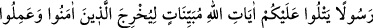
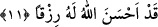

artmasına ve kuvvetlenmesine de sebep olur. Takvânın kemali ile, mecâzî varlığın
kabuğundan dışarı çıkıp hakiki varlığın özüne girmek ve ayânî îman ile vasıflanmak
mümkündür.
Âlimlerden biri bunu: “Ey gerçekten ve sâdıkane inanan akıl sâhipleri” şeklinde tefsir
etmiştir. Bu sıfatın mukayyide değil de sıfatı kâşife olması da mümkündür. Çünkü
mümin olmayanların ülü’l-elbâb/akıl sâhipleri olmaları uygun değildir. Ancak âyet
metnindeki “lüb” kelimesi ile herhangi bir şekilde gerek aptallık, gerek saflık, gerek
delilik ve gerekse başka bir akıl zaafından uzak olan akıl kasdedilmiş olursa, bu
takdirde bu sıfat sıfatı mukayyide olabilir. Bu takdirde takvâ olayının insanlar arasında
müminlere tahsis edilmesine gelince, bundan en çok yararlananlar onlar olduğu içindir.
Zâhire göre “__WORD__/elleziyne âmenû” mübtedâdır, haberi de sonra gelen “__WORD__/kad enzelallâhu ileyküm” cümlesidir.
“Allah size gerçekten bir zikir/öğüt verici uyarıcı (kitap) indirmiştir.” Buradaki size
hitâbı iltifat kabilindendir. “Zikir/öğüt verici” kelimesinden maksad ise kendisinden
bedel getirilerek beyan edilen rasûldür.
11. İman edip sâlih amel işleyenleri, karanlıklardan aydınlığa çıkarmak için size
Allah’ın apaçık âyetlerini okuyan bir Peygamber göndermiştir. Kim Allah’a inanır
ve faydalı iş yaparsa Allah onu, altlarından ırmaklar akan, içinde ebedî kalacakları
cennetlere sokar. Allah o kimse için gerçekten güzel bir rızık vermiştir.
“Îman edip sâlih amel işleyenleri” Bu ifâdede yer alan ism-i mevsûl, “ellezi”
kelimesi bir önceki âyet-i kerîmede sözü edilen zikir indirme olayından sonraki
müminlerdir. Eğer böyle kabul etmezsek îmanla vasıflı olan kimselerin küfür ve
inkârdan çıkarılmaları gibi bir anlam ortaya çıkar ki, bu mümkün değildir. Çünkü
îmanla vasıflı olan kimseler inkâr içinde değillerdir ki bundan çıkarılmış olsunlar. Şu
halde bunun mânâsı: “Peygamber içinde bulundukları durumdan onları çıkarmak
sûretiyle şu anda bulundukları îman ve amel-i sâlih üzere devam etmelerini sağlasın
diye Allah peygamber göndermiştir.” demek olur.
Ya da âyet-i kerîmeyi: “Allah Teâlâ o kişinin îman edeceğini bildiği veya çıkarsın
diye size Allah’ın apaçık âyetlerini okuyan bir peygamber göndermiştir.” Şeklinde de
tefsir edebiliriz.